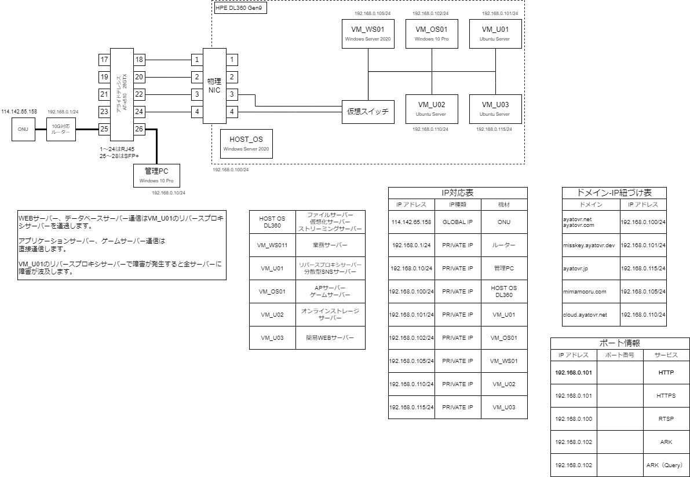

アイコンについて・・・ 個人開発 サークル・同人開発 企業依頼開発
◎サーバー構築・インフラ基盤及び運用保守
個人案件・企業案件でサーバー構築・インフラ構築及び運用保守全般を行っています。
物理サーバーの構築・インフラの構築及び運用保守を行っています。
このポートフォリオサイトを含め、私が構築したインフラ基盤・サーバーにて実際に稼働しています（画像参考）
画像からは分かりにくいですが、電源及び外部接続ネットワークは多重化を行ったり、無停電電源装置（USP）の設置による障害発生時のダウンタイム時間を最小限にしています。
◎詳細
・ドメイン取得、管理運用
・ネットワークインフラの構築・運用保守（レイヤー0～レイヤー4）※OSI参照モデルに準拠
・物理サーバーの構築・運用保守
・Hyper-V等仮想マシンの構築・運用
・WindowsServer及びUbuntuServerの構築・運用
・Webサーバー、DBサーバー、APサーバーの構築・運用
・ActiveDirectoryの構築運用（ADDSを利用したPC、ユーザー管理制御）
・内向きDNSサーバーの構築運用
・ライブストリーミングサーバーの構築運用（RTSP(T)）
・外部リモート接続用踏み台サーバーの構築・運用
◎使用機材（現行システムに利用している機材）
・BBIQ 10G回線及びBTV光1G回線を使用
・IO・DATA WN-DAX3600XR
・AlliedTelesis AT-x510-28GTX
・HPE ProLiant DL360 Gen9
・DELL（SFF）
・10G対応NICカード（SFP+）
・10GBase-SR 光トランシーバ（SFP+）
・Windows Server 2022
・Hyper-V
◎インフラ構成図（2023年5月22日更新）

→資料を閲覧する場合はリンクをクリック
◎VirtualCast向け外部ツール
個人依頼によりVirtualCastで使用できる外部ツールを制作しました。
VirtualCastの設定をGUIで行い設定ファイルのconf.jsonを生成します。また、生成されたjsonファイルをインポートし再設定し直すことが可能です。
現在はVirtualCast側に、同等の機能が実装された為、開発更新を無期限停止しています。
初回リリースまでの開発期間は1ヶ月です。
◎開発環境・使用言語
・Visual Studio 2017、CSharp、Windowsアプリとして開発
※こちらのツールはGitHubにてソースコードを公開しております。
→ソースコードを見る
→ダウンロード
2018年9月～2018年12月
◎I社様 予約会計システム
こちらは依頼されたシステム開発の仕事となります。
予約及び会計システムなど纏めた予約会計システムを作って欲しいとのことで開発したシステムとなります。
開発期間は半年弱です
◎使用言語
HTML、CSS、PHP、MySQL、Ubuntu
◎開発及びシステム環境
開発環境はローカルに設置されたXAMPP上にて行いました。実環境はVPS上に移して並行して行っています。
※こちらは開発時に作成した仕様書等を下記ページに用意しております。
→仕様書等各種資料を閲覧する場合はリンクをクリック
2021年1月～2021年10月
◎自社向け サラダ売上管理システム
自社で提供しているサラダ・フルーツ等の売上管理システムをExcel管理からシステムに移行しました。
開発期間は1ヶ月～2ヶ月ほどです。
◎使用言語
・HTML、CSS、PHP、MySQL、Ubuntu
◎開発及びシステム環境
・VPS上にUbuntuを構築しシステムはVPS上にて稼働させました。開発環境と実環境は同じシステムを利用しています。
2021年10月～2021年12月
◎現在開発中の自社システム
自社システムを開発しています。
開発期間は半年～で、現在も進行中のプロジェクトとなっています。
◎開発環境・使用言語
WindowsServer上に仮想化基盤を構築し、WindowsServerIISを基盤としたWebサーバーを構築しSQLServerにてシステムを開発稼働させています。
システムは現在すでにテスト段階ですでに稼働状態であり、デュプレックスシステム構成となっています。
◎使用言語・環境
HTML、CSS、PHP、C#、オンプレミス、WindowsServer2022、SQLServer、Hyper-V、IIS、Ubuntu、NGINX（リバースプロキシ）
上記のサーバー構築・インフラ基盤及び運用保守も閲覧ください。
2022年10月～現在
◎その他、各種資料の閲覧（DL用）
→各種資料を閲覧する場合はリンクをクリック